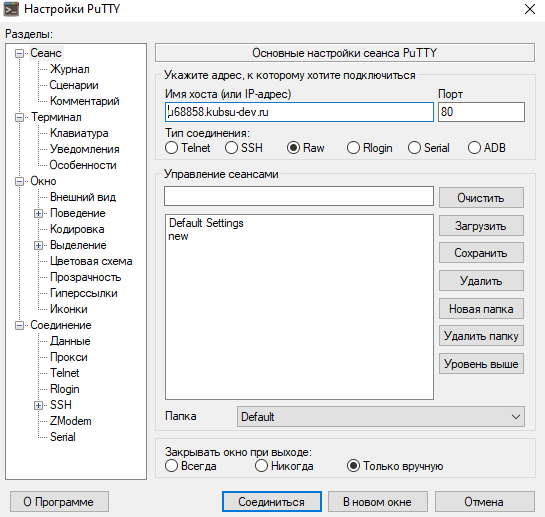
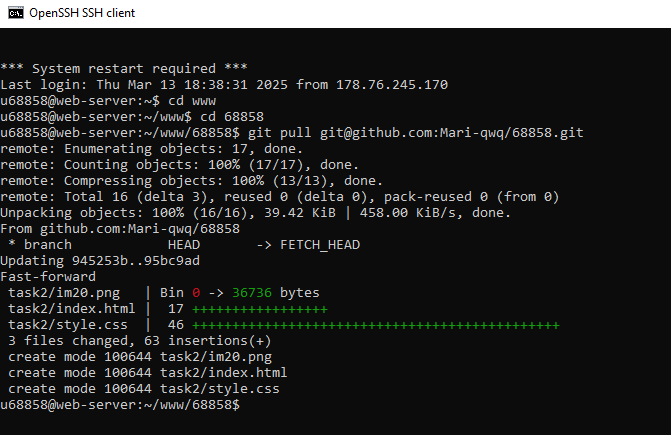
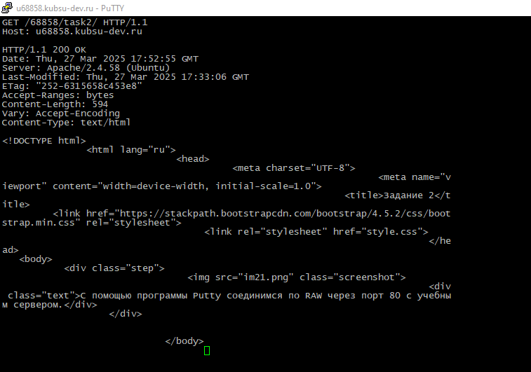
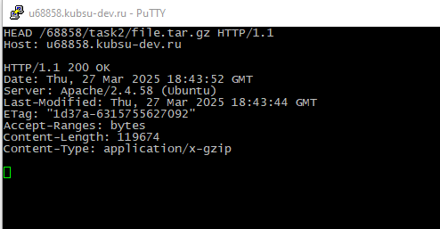
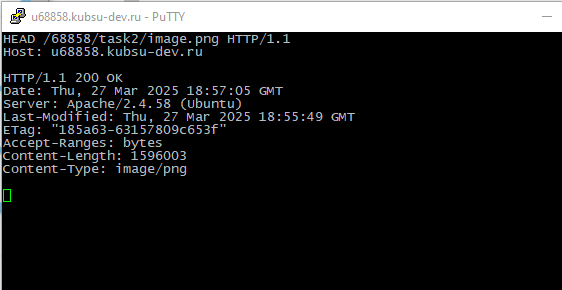
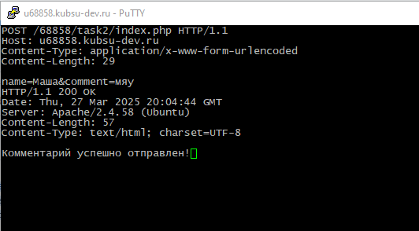
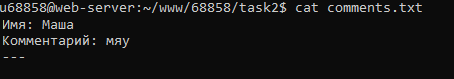
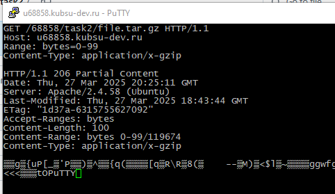
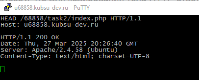

С помощью программы Putty соединимся по RAW через порт 80 с учебным сервером.

С помощью GET в протоколе HTTP 1.0 получим главную страницу. По ответу 200 ОК видим что запрос успешно выполненю

Создаю внутренню страницу и с помощью gitpull переношу ее на сервер

С помощью GET в протоколе HTTP 1.1 получим внутреннюю страницу. По ответу 200 ОК видим что запрос успешно выполненю

Определим размер файла file.tar.gz. Для этого используем метод HEAD. Метод HEAD в HTTP запрашивает только заголовки HTTP-ответа, но не само тело ответа. Размер файла: 119674 байт

Определяем медиа тип файла с помощью head. Content-Type сообщает о медиатипе файла image.png: image/png

Отправляем комментарий на сервер по адресу /index.php. Используем метод POST, по данному коду комментарий отправляется ввиде name=имя&comment=комментарий и записывается в файл comment.txt


Получим первые 100 байт файла /file.tar.gz c помощью HEAD. Для этого укажем Range: bytes=0-99

Определим кодировку ресурса /index.php. charset=UTF-8 сообщает браузеру, что для кодирования тела HTTP ответа использовалась кодировка UTF-8.